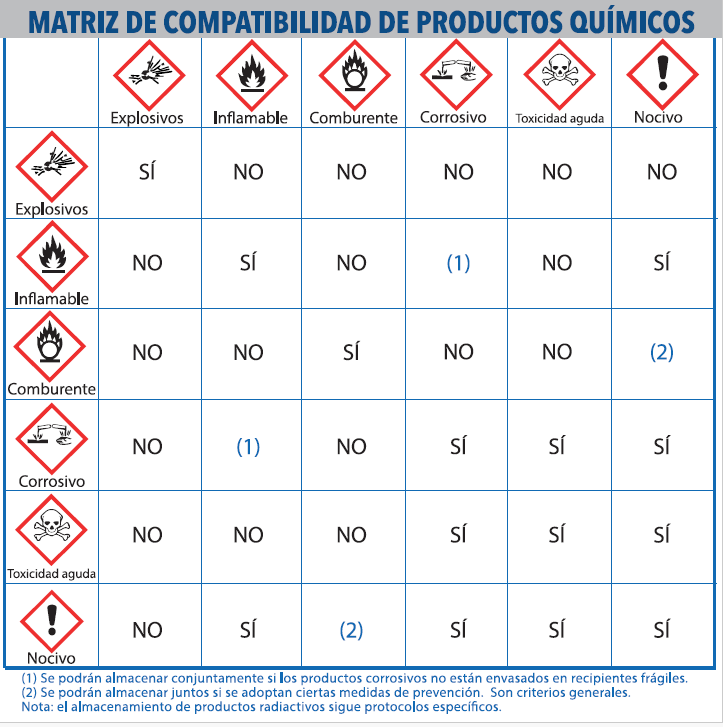

Capacitación de Seguridad Química
Manejo Seguro de Productos Químicos en la Industria del Cemento v6.0.
Objetivo General del Programa
Desarrollar las competencias técnicas y prácticas necesarias para identificar, manipular, almacenar y responder de manera segura ante los riesgos asociados a los productos químicos utilizados en los procesos de fabricación de cemento, aplicando el Sistema Globalmente Armonizado (SGA) y la jerarquía de controles de SSO.
¿Por qué en la cementera?
En la fabricación de clínker y cemento interactuamos con combustibles alternos, aceites industriales, aditivos de molienda, reactivos de laboratorio y polvos alcalinos con alto pH. Su manejo seguro garantiza que regreses a casa sano y salvo todos los días.
Compromiso Preventivo
El cumplimiento estricto de las directrices contenidas en esta capacitación no es opcional: es una responsabilidad de seguridad individual e institucional inquebrantable para salvaguardar la vida.
Conceptos Básicos de Química e Importancia de la Prevención
Sentemos las bases técnicas esenciales para entender los riesgos industriales en planta.
¿Qué es un Producto Químico?
Es todo elemento o compuesto químico, solo o mezclado, tal como se presenta en estado natural u obtenido por cualquier proceso industrial. En la industria del cemento, esto abarca desde los aditivos líquidos de molienda y los lubricantes de alta resistencia de los hornos, hasta sustancias corrosivas como la cal viva.
¿Qué es un Peligro Químico?
Es la capacidad intrínseca de una sustancia de causar daños a las personas, la propiedad o al medio ambiente. Un químico puede presentar un peligro físico (ej. provocar incendios), peligro para la salud (ej. causar quemaduras alcalinas en la piel) o peligro para el medio ambiente.
Diferencia Crítica: Peligro vs. Riesgo
Peligro
Es la capacidad inherente de una sustancia para hacer daño. No cambia.
Ejemplo: Un tambor sellado de ácido sulfúrico altamente concentrado. El peligro es corrosivo de por vida.
Riesgo
Es la probabilidad de que el daño ocurra debido a la exposición a dicho peligro.
Ejemplo: El riesgo es BAJO si el ácido está en su estante seguro con contención, pero es ALTO si se manipula sin gafas ni guantes químicos.
Importancia Vital de la Prevención
Un descuido milimétrico en el manejo químico puede desencadenar eventos catastróficos inmediatos (quemaduras graves por inhalación o contacto, explosiones) o crónicos (silicosis, dermatitis destructivas). La prevención es la única barrera de seguridad activa que garantiza que cada operario termine su turno en condiciones óptimas.
Legislación, Marco Normativo de SSO y Roles Organizacionales
Conozca las obligaciones legales nacionales, normas internacionales e implicaciones de su puesto de trabajo.
Reglamento de SSO de Guatemala (AG 229-2014 y Reformas)
De acuerdo con el Reglamento de Salud y Seguridad Ocupacional de Guatemala (Acuerdo Gubernativo 229-2014), todas las áreas industriales con presencia de agentes químicos nocivos para la salud deben estar estrictamente reguladas, identificadas, con sus respectivas Fichas de Datos de Seguridad (FDS) e instructivos de manipulación accesibles en idioma español.
Obligaciones del Empleador
- Identificar adecuadamente áreas de almacenamiento de químicos y desechos peligrosos para minimizar riesgos.
- Capacitar rigurosamente a los trabajadores con las mejores técnicas disponibles en manejo de químicos.
- Proporcionar el EPP certificado, adecuado e idóneo para cada tarea de forma gratuita.
Obligaciones del Trabajador
- Cumplir obligatoriamente con las normas, instructivos de seguridad y capacitaciones de la empresa.
- Utilizar obligatoriamente el EPP provisto de manera correcta y cuidar su perfecto estado.
- Informar de inmediato al supervisor o monitor de SSO sobre cualquier desviación en campo.
Responsabilidades por Puesto (Procedimiento Interno)
Seleccione un puesto de la organización para conocer sus obligaciones críticas específicas según el reglamento corporativo:
Haz clic en cualquier rol de la izquierda para desplegar sus obligaciones específicas.
Normas Internacionales Aplicadas
SGA / GHS (ONU Rev. 11)
Sistema Globalmente Armonizado de Clasificación y Etiquetado de Productos Químicos. El estándar global para homologar etiquetas y fichas SDS.
ISO 45001:2018
Norma internacional para Sistemas de Gestión de la Seguridad y Salud en el Trabajo. Marco base para una gestión preventiva proactiva corporativa.
Tipos y Clasificación de Peligros Químicos
Comprender las tres principales dimensiones de daño que pueden ejercer los químicos y los agentes higiénicos críticos de la cementera.
Arden con facilidad (ej. disolventes, combustibles de quemadores).
Pueden estallar violentamente por calor o fricción (ej. agentes de voladura en canteras).
Alimentan y avivan el fuego liberando oxígeno (ej. nitrato de amonio).
Cilindros de gas comprimido que pueden proyectarse violentamente o estallar.
Atacan destructivamente los metales de estructuras y equipos.
Sustancias inestables capaces de reaccionar violentamente sin combustión directa.
Efectos letales o severos en dosis únicas.
Quemaduras de piel u ojos por pHs extremos (ej: cemento húmedo, cal).
Gatilla dermatitis alérgica extrema (ej: por cromo VI en cemento).
Riesgos a largo plazo (ej: polvo de sílice libre cristalina).
Sustancias que pueden afectar la fertilidad o dañar el feto.
Daños específicos del sistema pulmonar, hepático o neurológico.
Capacidad de exterminar flora y fauna acuática en ríos o suelos tras fugas de aditivos o aceites lubricantes.
Sustancias persistentes que se acumulan en las cadenas tróficas del ecosistema.
Agentes Higiénicos Críticos en el Proceso de Cemento
Sustancias prioritarias monitoreadas permanentemente bajo directrices de SSO:
Fuentes e Impacto: Trituración, hornos y envasado. Causa irritación severa, dermatitis alcalina y quemaduras químicas en contacto húmedo ($pH$ 12-14).
Fuentes e Impacto: Polvo de cantera, arenas y molienda de crudo. Provoca silicosis crónica incurable, EPOC y es un carcinógeno pulmonar catalogado (IARC Grupo 1).
Fuentes e Impacto: Mantenimiento de ladrillos refractarios de hornos y combustibles alternativos. Altamente alergénico y cancerígeno por inhalación prolongada.
Sistemas de Identificación de Peligros Químicos
Aprenda a descifrar los elementos de una etiqueta SGA y las diferencias con el Rombo NFPA 704.
4.1 Sistema Globalmente Armonizado (SGA / GHS)
Es el sistema estándar internacional diseñado para la manipulación y uso cotidiano del producto químico. Facilita la comprensión de los peligros mediante elementos clave en su etiqueta:
Estudio de los 9 Pictogramas Oficiales del SGA (Haz clic para explorar)
4.2 Norma NFPA 704 (El Rombo de Seguridad)
La norma NFPA 704 está enfocada exclusivamente en el personal de respuesta a emergencias (bomberos, brigadas de planta) para identificar peligros clave durante siniestros de forma táctica.
Azul — Riesgo para la Salud (Escala 0-4)
3 = Riesgo Grave, 4 = Riesgo Extremo (Mortal).
Rojo — Inflamabilidad (Escala 0-4)
3 = Líquidos que se encienden bajo casi todo nivel normal.
Amarillo — Reactividad (Escala 0-4)
Indica propensión a estallar o reaccionar destructivamente.
Blanco — Símbolos Especiales
OX = Oxidante | W̶ = No usar agua | SA = Gas asfixiante simple.
4.3 Diferencias Comparativas: SGA vs. NFPA 704
| Característica | SGA (GHS) | NFPA 704 |
|---|---|---|
| ¿Para qué sirve? | Manipulación diaria en frentes de trabajo y almacenamiento. | Respuesta táctica ante emergencias e incendios. |
| ¿Quién lo utiliza? | Todos los colaboradores de la planta. | Brigadas de emergencia y bomberos. |
| ¿Dónde se encuentra? | Etiquetas en envases y hojas de seguridad (SDS). | Tanques fijos, tuberías, entradas de almacenes. |
| ¿Cómo clasifica? | Categorías de peligro (1 a 5, donde 1 es el peligro mayor). | Escala numérica simple de 0 a 4 (donde 4 es el peligro mayor). |
Hojas de Datos de Seguridad (SDS / FDS)
Su mejor herramienta técnica de autoprotección antes de manipular cualquier químico en la cementera.
¡ALERTA OPERATIVA CRÍTICA!
Hemos detectado desviaciones serias en planta por colaboradores que omiten la lectura previa de las FDS. No revisar la SDS antes de usar una sustancia es una falta de seguridad grave que lo expone directamente a lesiones irreversibles, quemaduras alcalinas severas, envenenamiento o muerte.
Estándar Corporativo de Vigencia:
Toda SDS activa en los frentes de trabajo debe estar en idioma español, estructurada bajo SGA y tener una antigüedad máxima de 3 años de emisión por el fabricante. Documentos en inglés o vencidos están prohibidos.
Las 16 Secciones Normalizadas del SGA
Haz clic sobre cada una de las 16 secciones internacionales para revisar su alcance preventivo de campo:
Incluye el nombre de la sustancia, código interno SAP, usos industriales recomendados, teléfonos de emergencia de planta y del fabricante.
Presenta la clasificación de peligro, palabras de advertencia (Peligro/Atención), los símbolos del SGA en rombos con borde rojo, y todas las frases H (de peligro) e Y (de prudencia).
Identidad química, porcentaje de concentración de los ingredientes peligrosos de la mezcla y su número CAS.
Instrucciones precisas para responder en caso de inhalación, ingestión, contacto ocular o cutáneo directo, detallando si se permite o prohíbe inducir el vómito.
Medios de extinción adecuados (CO2, polvo químico seco) y agentes de extinción prohibidos (ej. no usar agua sobre carburo de calcio).
Estrategias de evacuación del área, uso del kit absorbedor y métodos de neutralización idóneos aprobados por Gestión Ambiental.
Lineamientos de estantería, control de temperatura, ventilación obligatoria requerida y familias químicas incompatibles.
Parámetros de ventilación locales y especificación del polímero obligatorio de los guantes (nitrilo/neopreno) y filtros del respirador para la tarea.
Aspecto, olor, pH exacto, densidad, límites de inflamabilidad o explosividad y punto de ebullición.
Estabilidad química del compuesto, materiales incompatibles específicos a evitar y productos de descomposición peligrosos tras fuego.
Efectos médicos inmediatos y crónicos por sobreexposición, valores de dosis letal (DL50) y potencial de carcinogenicidad.
Toxicidad ambiental en agua, persistencia y capacidad de bioacumulación en el entorno.
Métodos de reciclaje, tratamiento o descarte final de remanentes y embalajes vacíos autorizados.
Código de transporte internacional, clasificación vial e instrucciones especiales de embalaje.
Disposiciones locales de salud, seguridad industrial y legislación de protección ambiental aplicables.
Glosarios, referencias bibliográficas, historial de revisiones del documento y lineamientos de entrenamiento sugeridos.
Normotecnia Básica de Emergencia y Prevención (El Trinomio 2-4-8)
Antes de usar cualquier producto de la planta (ej: aditivos de clínker), grábese este trinomio de secciones como regla de oro operativa básica:
Le indica con claridad a qué peligro específico se está exponiendo de inmediato en la operation.
Le muestra exactamente qué hacer en caso de contacto ocular o inhalación para evitar un daño permanente.
Le especifica obligatoriamente qué tipo de guante, máscara o gafas debe portar antes de tocar el químico.
Vías de Ingreso de los Químicos al Organismo
¿Cómo logran las sustancias penetrar sus defensas biológicas en campo?
Inhalación
A través del aire (gases, vapores de disolventes, polvos alcalinos). La más crítica en la cementera.
Contacto Cutáneo
Absorción dérmica directa por falta de guantes de protección o ropa idónea.
Contacto Ocular
Salpicaduras que provocan desde irritación hasta ceguera química.
Ingestión
Vía digestiva accidental (comer o fumar con manos con lubricante, trasvases prohibidos).
Inyección
Ingreso del contaminante a través de heridas abiertas o cortes con herramientas sucias.
Factores que Aumentan la Absorción en Campo
Jerarquía de Controles de SSO
El orden de prioridad normado internacionalmente para eliminar o minimizar riesgos.
Metodología de Prioridad SSO
La seguridad no empieza por el EPP. Siga siempre este orden descendente de controles:
Selección y Limitaciones del EPP Químico
Cómo escoger el equipo idóneo y entender por qué no elimina el peligro original.
Guía de Selección de EPP en Planta
Usar estrictamente guantes de Nitrilo o Neopreno homologados.
⚠ Prohibidos guantes de cuero o lona para químicos.Filtros mecánicos P100 para sílice y polvo alcalino. Cartuchos de carbón activo para vapores y solventes.
Asegurar perfecto sello facial.Monogafas de sello hermético indirecto y pantalla facial en trasvases críticos.
Evitar uso de lentes convencionales.Limitación Crítica de los Equipos:
El EPP no disminuye ni elimina la agresividad o toxicidad inherente del producto químico; únicamente limita su exposición física de forma temporal. Si un guante se perfora o un respirador pierde hermeticidad por vello facial, la barrera se destruye de inmediato.
Buenas Prácticas de Manipulación Diaria
Directrices obligatorias de seguridad operativa durante el trasvase y manipulación de sustancias.
Almacenamiento Seguro e Incompatibilidades
Reglas críticas para la disposición física en bodegas químicas, segregación y control del inventario obsoleto.
Distancia horizontal mínima requerida para sustancias bajo restricciones en una misma estantería.
Cubetos o bandejas con capacidad de retener el 110% del volumen del recipiente líquido más grande.
Toda zona de manipulación debe tener estaciones lavaojos accesibles y libres de obstáculos.
Ruta de Productos Obsoletos y Formularios SAP
El almacenamiento de químicos vencidos eleva drásticamente el riesgo de inestabilidad o fugas. Se debe registrar el producto en SAP mediante los formularios FOR-000999 y FOR-002031 para su control en catálogo. Todo producto sin rotación mayor a 12 meses debe ser trasladado a cuarentena.
Matriz de Compatibilidad e Incompatibilidades Críticas

Nombre de archivo en Git: matriz-compatibilidad.pngPermiso de Ingreso de Químicos Externos (PIQE)
Cualquier empresa contratista o subcontratista que requiera ingresar sustancias químicas debe tramitar obligatoriamente el formato PIQE ante el Coordinador SSO de la planta con un mínimo de 72 horas de anticipación, entregando copias de sus SDS correspondientes. No se permiten remanentes al finalizar la obra.
La omisión del PIQE suspende los trabajos del contratista.
Respuesta ante Emergencias Químicas
Protocolos vitales de actuación inmediata y uso de estaciones de emergencia.
- Detener o contener la fuga en su origen si es seguro hacerlo.
- Delimitar el área y reportar de inmediato a control y brigadas.
- Absorber con material del Kit (aserrín, arena o paños inertes). Nunca lave con agua directa hacia los drenajes comunes.
- Diríjase de inmediato a la estación lavaojos más cercana en menos de 10 segundos.
- Abra los párpados a la fuerza y sosténgalos con sus dedos.
- Irrigue con abundante agua por un mínimo de 15 a 20 minutos continuos.
- Busque atención médica de forma urgente.
Gestión Correcta de Residuos Peligrosos
Normas estrictas de descarte, clasificación y etiquetado para proteger el medio ambiente.
Desafío Interactivo & Escenarios de Planta
Ponga a prueba su conocimiento sobre riesgos y analice situaciones reales de campo.
Análisis de Desviaciones Comunes de Campo
A Derrame de Ácido en Laboratorio de Calidad
Un analista quiebra accidentalmente un matraz de ácido clorhídrico concentrado y, para apresurar la limpieza, toma una manguera de agua y lava el derrame dirigiéndolo al desagüe común.
🚫 ACCIÓN TOTALMENTE INSEGURA Y PROHIBIDA
Consecuencias: Arrojar químicos al drenaje viola las normas de medio ambiente. Verter agua directa sobre un ácido concentrado puede gatillar una reacción exotérmica violenta con proyecciones de salpicaduras corrosivas al rostro.
Acción Correcta: Activar control de derrames. Colocarse EPP químico, aplicar bicarbonato de sodio o cal apagada para neutralizar el $pH$ y absorber con paños inertes del kit.
B Ingreso de Sustancias sin Control de Contratistas
Una contratista ingresa el domingo a reparar bases de maquinaria en ensacado, trayendo resinas epóxicas sin rotulado en botellas de agua genéricas.
🚫 INFRACCIÓN CONTRACTUAL CRÍTICA
Consecuencias: Ingresar químicos clandestinos expone al personal a riesgos no declarados y viola las políticas contractuales de seguridad.
Acción Correcta: El supervisor de obra debió tramitar el permiso **PIQE** 72 horas antes de iniciar los trabajos. Las sustancias deben poseer etiqueta SGA y portar su propio kit de respuesta a derrames.
Checklist de Campo Obligatorio
Antes de manipular o retirar cualquier producto químico de almacén, verifique los siguientes 8 puntos críticos de seguridad en planta haciendo clic en cada fila:
1. ¿La FDS del producto está disponible y actualizada?
Debe estar accesible en español y tener una vigencia menor o igual a 3 años.
2. ¿Reconozco los peligros de la etiqueta original y el rombo?
Identifico plenamente las Frases H de riesgo a la salud, inflamabilidad y reactividad antes de mover el contenedor.
3. ¿Tengo el EPP específico de barrera química normado?
Cuento con guantes del polímero exacto (nitrilo/neopreno), gafas de sello hermético y respirador con filtro adecuado.
4. En caso de trasvase, ¿el recipiente está homologado e identificado?
El frasco posee etiqueta de trasvase con código QR. Prohibido el uso de botellas de refresco.
5. ¿Validé la Matriz de Compatibilidad para almacenamiento común?
Respeto el cruce de condiciones: si hay restricción, mantengo la separación mínima de 1 metro horizontal.
6. ¿Existe un cubeto de retención secundaria independiente?
El dique tiene la capacidad estructural de contener al menos el 110% del volumen del envase líquido mayor.
7. ¿Ubico plenamente la estación de lavaojos y el kit de derrames?
Los pasillos están despejados y la estación lavaojos está a menos de 1 minuto de distancia del área de labor.
8. ¿Sé a quién notificar en caso de fuga activa o empaque dañado?
Debo reportar la anomalía al Jefe de Almacén y al Supervisor SSO.
¡Validación de Campo Completada!
Ha verificado satisfactoriamente los 8 controles de seguridad física. Está listo para la labor.
¿Listo para el desafío de SSO?
Responda 5 afirmaciones determinando si corresponden a un Mito o una Realidad de campo. Requerirá al menos 4 aciertos para considerarse aprobado en esta sección de entrenamiento.
Cargando afirmación...
Resultado
Detalle de retroalimentación.
Resultado
Descripción del puntaje.
Evaluación Final de Competencias
Cuestionario obligatorio institucional para validación y registro de aprobación.